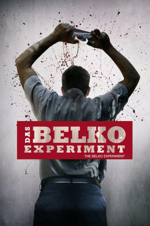

gesehen am 19.10.2017
gesehen am 19.10.2017Alternativ: The Belko Experiment gesehen am 19.10.2017
 
 IMDB-Wertung: 6.1 / 10
IMDB-Wertung: 6.1 / 10  Metascore:
Metascore: 
Eigentlich ist sollte es für die Angestellten der Non-Profit-Organisation Belko Corp. ein ganz normaler Arbeitstag werden. Doch als am Morgen kurzerhand sämtliche einheimischen Bediensteten nach Hause geschickt werden, ist klar, dass etwas anders ist als sonst. Und bald erfahren die Verbleibenden in dem Bürogebäude am Stadtrand Bogotás auch, was: Unbekannte riegeln das Belko-Headquarter komplett ab, kontrollieren das perfide Experiment von außen und dirigieren die 80 Arbeitskollegen über die Lautsprecheranlage. Sie werden vor eine grausame Wahl gestellt: Entweder töten sie sich gegenseitig oder jemand anderes tötet sie alle durch in ihren Körpern versteckte Mini-Sprengsätze. Schnell teilt sich die Bürobelegschaft in zwei Hälften: Die eine, unter Führung des leitenden Angestellten Mike will einfach nur überleben, die andere jagt unter Leitung von Belko-Boss Barry und dessen rechter Hand Wendell fortan die ehemaligen Kollegen. Ein blutiger Überlebenskampf nimmt seinen Lauf...
Jahr: 2016
Dauer: 88 Minuten
FSK: 18
Land: USA Studio: BH TiltTonspuren: DTS - ,
Untertitel: Deutsch,
Auflösung: 1080p (1920x800) Größe: 3665 MB
Genre: Action, Thriller, Horror
Regisseur: Greg McLean
Drehbuch: James Gunn
Soundtrack:
Darsteller:
 John Gallagher Jr. als Mike Milch
John Gallagher Jr. als Mike Milch Tony Goldwyn als Barry Norris
Tony Goldwyn als Barry Norris Adria Arjona als Leandra Florez
Adria Arjona als Leandra Florez John C. McGinley als Wendell Dukes
John C. McGinley als Wendell Dukes Melonie Diaz als Dany Wilkins
Melonie Diaz als Dany Wilkins Sean Gunn als Marty Espenscheid
Sean Gunn als Marty Espenscheid Brent Sexton als Vince Agostino
Brent Sexton als Vince Agostino Josh Brener als Keith Mclure
Josh Brener als Keith Mclure David Dastmalchian als Lonny Crane
David Dastmalchian als Lonny Crane Gregg Henry als The Voice
Gregg Henry als The Voice Michael Rooker als Bud Melks
Michael Rooker als Bud Melks Rusty Schwimmer als Peggy Displasia
Rusty Schwimmer als Peggy Displasia Abraham Benrubi als Chet Valincourt
Abraham Benrubi als Chet Valincourt Stephen Blackehart als Robert Hickland
Stephen Blackehart als Robert HicklandDatei: X:\FSK18-2016\Belko Experiment, Das (2016, FSK18, 1920x800).mkv seit 11.10.2017
Festplatte: FSK18
 Es gibt insgesamt 25 Filme in der Gruppe 'FSK18-2016'
Es gibt insgesamt 25 Filme in der Gruppe 'FSK18-2016'